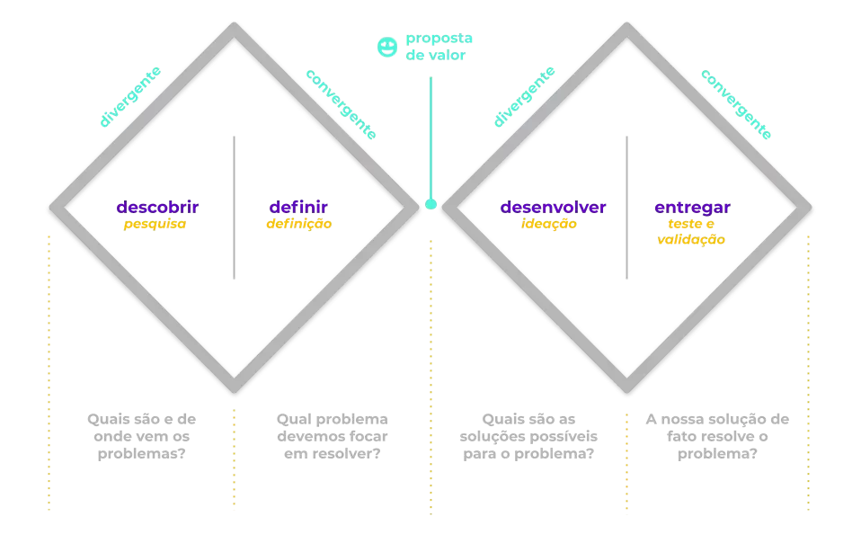
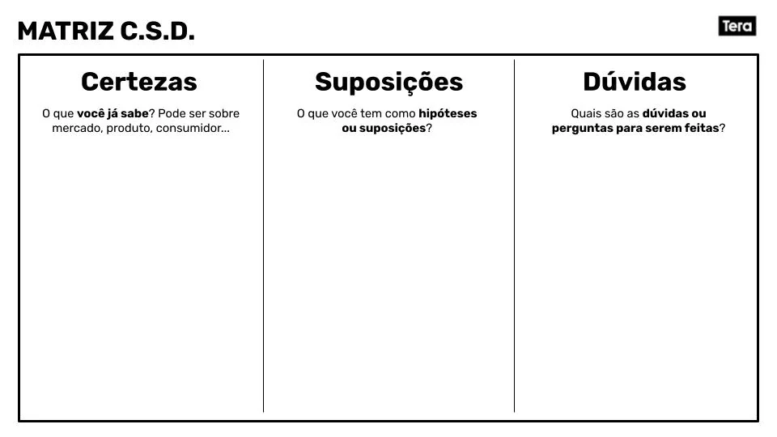

Módulo 1: Fundamentos de UX
Conheça os princípios da experiência do usuário, o design centrado nas pessoas e a importância de criar soluções digitais intuitivas e funcionais.

Conteúdo Programático
Acompanhe as aulas correspondentes a este módulo.
-
Aula 1
Aula 1 - Introdução ao UX Design
Explore os conceitos essenciais, a importância da experiência do usuário e as premissas iniciais do design centrado nas pessoas.
-
Aula 2
Aula 2 - Design Centrado no Usuário
Entenda como direcionar o desenvolvimento tecnológico considerando as expectativas, necessidades e limitações reais dos usuários.

-
Aula 3
Aula 3 - Princípios de Usabilidade
Descubra as bases que tornam sistemas digitais fáceis de navegar, eficientes e amigáveis para diferentes perfis de público.
-
Aula 4
Aula 4 - O Papel do UX Designer
Compreenda as responsabilidades, as frentes de atuação e o valor estratégico de um profissional de experiência do usuário dentro de equipes de tecnologia.
-
Aula 5
Aula 5 - Tendências de Mercado
Analise o cenário atual da indústria, as inovações em processos de produto e as demandas crescentes por excelência digital.